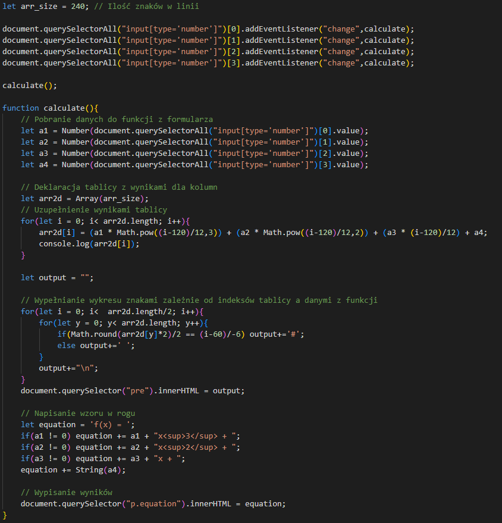

Wykorzystując język programowania Java Script oraz trochę CSS'a,
stworzyliśmy w prosty sposób całkiem dokładny wykres wielomianów.

Sam kod działa następująco:
Na początku jest zatwierdzana ilość znaków na linię,
następnie z formularza zostają pobrane dane.
Potem jest tworzona tablica wyników z funkcji,
do której zostaje zapisywany wynik wielomiany dla każdej kolumny.
Dalej wyniki z kolumny są pobierane, i porównywane z aktualnym miejscem
wypisywanego znaku, jeśli dane się zgadzają zostaje dodany widoczny znak,
a jeśli nie, to jest dodany biały znak. Przed końcem zostaje wypisany
ogólny wzór funkcji w lewym rogu, i po tym cały wykres zostaje wypisany.